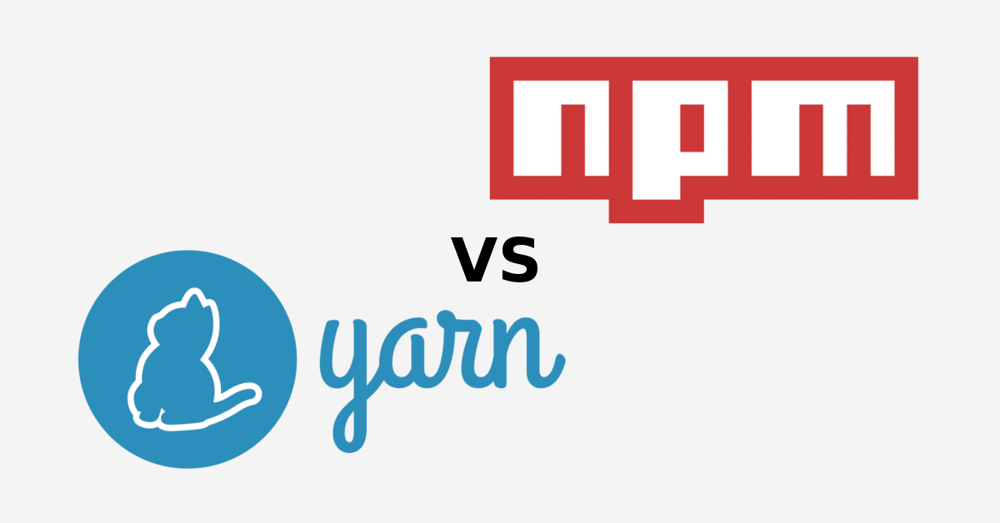

NPM + YARN

NPM ?
Gestor de paquetería de Javascript
Npm Inc., Freemium paquetes privados, Copyright
Ecosistema nodejs desde 2009
Constructor de proyectos
Scripter
YARN ?
Yarn 2 - Berry
Licencia BSD
Más rápido, seguro y offline
Constructor de proyectos
Scripter
NPM + YARN